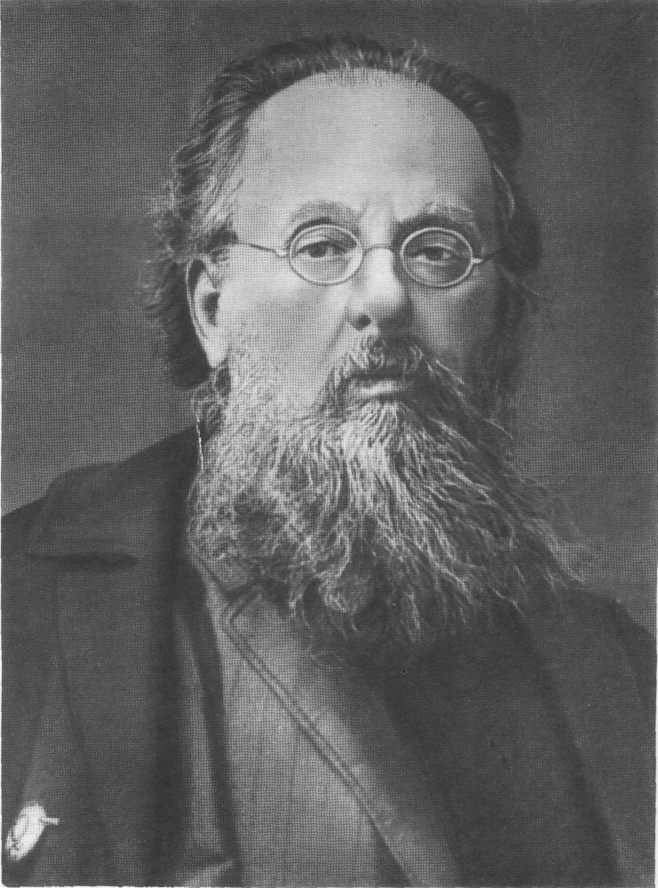

Константин Эдуардович Циолковский
17 сентября 1857 - 19 сентября 1935
Аудитория 222
Открыла 4 июля 2017 года
17 сентября 1857 - 19 сентября 1935
Открыла 4 июля 2017 года

Имя великого русского ученого, основоположника теории реактивного движения и космонавтики известно во всем мире. Вся его жизнь была настоящим подвигом во имя людей, на благо всего человечества.
Он родился в большом торговом селе Ижевское Рязанской губернии 17 сентября 1857 года в семье лесничего. В 10 лет после перенесенной скарлатины почти полностью потерял слух. Это лишило мальчика возможности учиться в гимназии и основы наук пришлось осваивать самостоятельно.
В 1878-1879 годах, живя в Рязани, молодой человек начал составлять «астрономические чертежи». В 22 года в Рязани он сдавал экстерном экзамены на звание учителя уездных училищ и получил назначение в небольшой город Боровск Калужской губернии.
Продолжая мечтать о космосе, в 1883 году Циолковский написал своеобразный научный труд в форме дневника «Свободное пространство» с собственноручной пометкой: «Юношеская работа». Циолковским впервые был сделан четкий вывод: единственно возможный способ перемещения в космическом пространстве основан на принципе реактивного движения. В «Свободном пространстве» ученый предугадал основы будущей ракетно-космической техники и рассмотрел условия возможного существования человека в космическом корабле. Впервые подошел к мысли о необходимости активного преобразовательного отношения к космосу как месту обитания людей.
В 1892 году за педагогические заслуги Циолковский был переведен в Калугу, где все свободное время отдавал научным исследованиям по проблемам ракетодинамики и космонавтики. Именно эти работы составили подлинную славу ученого, которого весь мир знает, как основоположника теоретической космонавтики. Заслуга Циолковского состоит в том, что он внес огромный вклад в новый раздел механики - механики тел переменной массы. Он вывел простую математически, но фундаментальную по значимости формулу - уравнение движения ракетного летательного аппарата, создал теорию полета ракеты с учетом изменения ее массы в процессе движения, строго научно обосновал возможность достижения космических скоростей, доказав осуществимость межпланетных полетов.
Он дал полную картину полета в космос, а также разработал программу поэтапного освоения Вселенной, состоящую из 16 пунктов. Заслугой Циолковского является то, что он не ограничился изложением принципа действия многоступенчатых ракет, а впервые дал их подробное математическое обоснование и доказал возможность получения космических скоростей при помощи реактивных двигателей, работающих на химическом топливе.